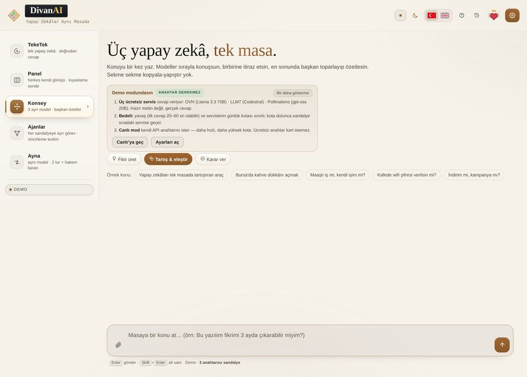

A ChatGPT alternative? Where it fits, where it does not
This is not a “we are better” page. It lists what DivanAI does, what it does not, and which job belongs to a single-model assistant instead.

Side by side
| Single-assistant platforms | DivanAI | |
|---|---|---|
| Account | Usually required | Not required |
| Models | One vendor's models | Four vendors at one table |
| Disagreement | None | Council · Panel · Mirror |
| Backend | Their server | None — a single HTML file |
| Video generation | Partly | No |
| Team workspace | Often | No |
Where the table wins
- A second opinion: four vendors on one question, side by side, instead of one answer.
- No account: one link, one page, nothing else.
- Your key stays yours: with your own API key nothing passes through a server of ours — there is none.
- Portable: one file you can download and host yourself (Apache 2.0).
Where it loses
A single factual question is faster on one model. There is no large file workspace, no team features, no video generation and no app-store app. The keyless demo is slow. We do not hide those gaps — a tool that states its job beats one that claims every job.
Frequently asked questions
Does it replace ChatGPT?
Not for every task. For a single answer, one model is faster. For disagreement or many vendors, this fits.
Is it free?
Yes. The app costs nothing; it runs on the services' free tiers.
Where does my data go?
The conversation stays in your browser; requests go to the service you picked.